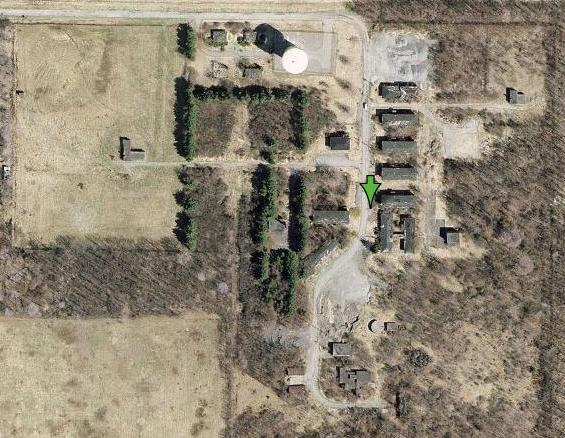

illicitohio.com
Brookfield AFS
Brookfield AFS
Where: Brookfield, Ohio
When: 2007
Status: Abandoned
Clearly I had been a bit slow to update the site. I guess I just needed something to inspire me to get out, get some pictures, and do the update. I found just what I was looking for when I finally made the trip out to see the old Nike Site in Brookfield... which ended up not being a Nike Site after all. More on that later, but before I go any further, let me thank the wonderful people over at radomes.org. These guys cleared up many questions and set me straight on many misconceptions. Their site is unreal. Check it out!
So back to the topic at hand. I made the trip out to the former AFS in September of 2007. I actually made two seperate trips. The first was with my girlfriend, but we were unfortunately pulled away early due to some family issues, so I made a return trip early the following Monday morning on my way to Columbus Ohio.
The site is really easy to find. I really don't recommend checking it out though. More on that...
The Road Leading back to the complex. The road has a very misleading name indeed.
Long story short, visit number one went fine. Visit number two actually went fine, but it was a close call. Just as I was about to leave the site, I rounded a building to head down the road out of the complex when above the weeds I saw the light bar of Brookfield's finest creeping my way with a police car attached to the bottom of it. I wasn't there to cause trouble, but that doesn't always matter, so I decided to make a run for it just to be safe. I ran until I figured the officer would be close enough to be able to see me, by sort of calculating his approximate distance in my mind. Right about when he would have been able to see, I ducked in to what should have been brush. It was jagger bushes... lots of them. It hurt. I waited a moment, got out of the bush, and hid in a less painful spot. The officer patrolled the site and then left. I quickly followed him and headed home. Long story short, they do watch this place. The guys at radomes had the sense to ask permission. I did not. Sorry local police guys... but no harm no fowl, right?
On to some details about the site.
This is the hexagonal base of a radome.
Again, I have to thank Radomes for their information... without them, I would have been lost. Their info is much more detailed and can be found here. I could spend hours at their site.
The Brookfield site was not a Nike Missile site as apparently believed by the Brookfield city engineers when they named the road on which it resides. It was actually used by The 662nd Radar Squadron from 1952 until 1959 when they were relocated to Oakdale PA where they apparently spent their days hiding UFOs from conspiracy theorists.
Once the squadron moved to PA, the site was used as a Gap Filler, which is exactly what it sounds like it would be, throughout the 1960s. I'm not sure exactly what date the base was decommissioned, but pictures of the site from the 1980s show it to be relatively still intact. See a 1980's photo on the radomes site here.
The picture that is linked in the text above is of the building you are seeing next to you. The tower that is next to it was for the gap filler radar I believe and was eventually removed. The towers that are on site now are not originals and are used for cell phone companies.
I'm not sure why the cell companies would bother using these old sites, except that maybe the research done by the military proves them to be good, clear, high up, locations? I'm really not sure, but it certainly confused me at first because I assumed these were original towers... then again, I also assumed this was a missile base and it was not.
Large Air Conditioning Vents in a room that previously was connected to a radar tower.
So there you have it... It wouldn't be a Military Site if I didn't use the words Cold War Era Relic. These places were really something though. These types of places are scattered all over the country. Its weird how this entire complex was just hiding out behind a row of houses off the edge of route 7. If you didn't know it was there, you'd just assume it was a farm road, or something like that. I also had to ask myself who the hell wanted to live near this place back when it was operating? The houses along 7 mostly appeared to be 1970's era houses, so maybe no one lived there. I don't know if these places were really targets, but I would imagine that the enemy would have every reason to want to take out radar.
So what was learned on this trip? Not every military site from the 60's was a Nike site. Its worth mentioning by the way that Nike sites were part of the Nike Missile Defense program... its a type of missile. My understanding from all of the info provided by the guys at Radomes, and from reading around the net is that this was originally just early warning radar. I had originally thought the layout (pictured below) with the outlying buildings was because those buildings would have housed something dangerous like... missiles. Not so. The guys from Radomes informed me that the distance was to avoid interference between Ground to Air, and Air to Ground signals. This place opened up a whole world of info I previously knew nothing about, and I can't quit reading about it. Cool stuff.
Vandals have sadly destroyed much of what remains of the complex.
Before scrolling below for additional photos, here is an overview of the site. You can see the gap between the up and down signals on the far left and right. The white thing is a watertower that was built around 1994. Next to it are 4 remaining family housing units. To the right of the arrow is the mess hall, and North (above) that are the four barracks buildings. At the very top of that row is a rec area. If you look really closely, you can see the base of a radar sphere toward the lower left. Near that you'll find the communications building, a water storage tank, and some other garage type buildings. Pictures of all of these, except the radar sphere base are either below, or in the gallery here. There are about 7 pages of photos there without description.

NOTE: Your browser's pop up blocker may prevent you from using the gallery correctly. If so, you should be able to change it to allow content from my page. There is nothing harmful on my page, its simply a protection against a useful application that some people do use maliciously.
Tons of pictures can be found in the gallery here.